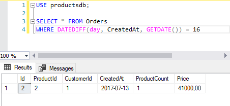

Функции по работе с датами и временем
T-SQL предоставляет ряд функций для работы с датами и временем:
GETDATE: возвращает текущую локальную дату и время на основе системных часов в виде объекта datetime
1SELECTGETDATE()-- 2017-07-28 21:34:55.830GETUTCDATE: возвращает текущую локальную дату и время по гринвичу (UTC/GMT) в виде объекта datetime
1SELECTGETUTCDATE()-- 2017-07-28 18:34:55.830SYSDATETIME: возвращает текущую локальную дату и время на основе системных часов, но отличие от GETDATE состоит в том, что дата и время возвращаются в виде объекта datetime2
1SELECTSYSDATETIME()-- 2017-07-28 21:02:22.7446744SYSUTCDATETIME: возвращает текущую локальную дату и время по гринвичу (UTC/GMT) в виде объекта datetime2
1SELECTSYSUTCDATETIME()-- 2017-07-28 18:20:27.5202777SYSDATETIMEOFFSET: возвращает объект datetimeoffset(7), который содержит дату и время относительно GMT
1SELECTSYSDATETIMEOFFSET()-- 2017-07-28 21:02:22.7446744 +03:00DAY: возвращает день даты, который передается в качестве параметра
1SELECTDAY(GETDATE())-- 28MONTH: возвращает месяц даты
1SELECTMONTH(GETDATE())-- 7YEAR: возвращает год из даты
1SELECTYEAR(GETDATE())-- 2017DATENAME: возвращает часть даты в виде строки. Параметр выбора части даты передается в качестве первого параметра, а сама дата передается в качестве второго параметра:
1SELECTDATENAME(month, GETDATE())-- JulyДля определения части даты можно использовать следующие параметры (в скобках указаны их сокращенные версии):
year (yy, yyyy): годquarter (qq, q): кварталmonth (mm, m): месяцdayofyear (dy, y): день годаday (dd, d): день месяцаweek (wk, ww): неделяweekday (dw): день неделиhour (hh): часminute (mi, n): минутаsecond (ss, s): секундаmillisecond (ms): миллисекундаmicrosecond (mcs): микросекундаnanosecond (ns): наносекундаtzoffset (tz): смешение в минутах относительно гринвича (для объекта datetimeoffset)
DATEPART: возвращает часть даты в виде числа. Параметр выбора части даты передается в качестве первого параметра (используются те же параметры, что и для DATENAME), а сама дата передается в качестве второго параметра:
1SELECTDATEPART(month, GETDATE())-- 7DATEADD: возвращает дату, которая является результатом сложения числа к определенному компоненту даты. Первый параметр представляет компонент даты, описанный выше для функции DATENAME. Второй параметр - добавляемое количество. Третий параметр - сама дата, к которой надо сделать прибавление:
123SELECTDATEADD(month, 2,'2017-7-28')-- 2017-09-28 00:00:00.000SELECTDATEADD(day, 5,'2017-7-28')-- 2017-08-02 00:00:00.000SELECTDATEADD(day, -5,'2017-7-28')-- 2017-07-23 00:00:00.000Если добавляемое количество представляет отрицательное число, то фактически происходит уменьшение даты.
DATEDIFF: возвращает разницу между двумя датами. Первый параметр - компонент даты, который указывает, в каких единицах стоит измерять разницу. Второй и третий параметры - сравниваемые даты:
123SELECTDATEDIFF(year,'2017-7-28','2018-9-28')-- разница 1 годSELECTDATEDIFF(month,'2017-7-28','2018-9-28')-- разница 14 месяцевSELECTDATEDIFF(day,'2017-7-28','2018-9-28')-- разница 427 днейTODATETIMEOFFSET: возвращает значение datetimeoffset, которое является результатом сложения временного смещения с другим объектом datetimeoffset
1SELECTTODATETIMEOFFSET('2017-7-28 01:10:22','+03:00')SWITCHOFFSET: возвращает значение datetimeoffset, которое является результатом сложения временного смещения с объектом datetime2
1SELECTSWITCHOFFSET(SYSDATETIMEOFFSET(),'+02:30')EOMONTH: возвращает дату последнего дня для месяца, который используется в переданной в качестве параметра дате.
12SELECTEOMONTH('2017-02-05')-- 2017-02-28SELECTEOMONTH('2017-02-05', 3)-- 2017-05-31В качестве необязательного второго параметра можно передавать количество месяцев, которые необходимо прибавить к дате. Тогда последний день месяца будет вычисляться для новой даты.
DATEFROMPARTS: по году, месяцу и дню создает дату
1SELECTDATEFROMPARTS(2017, 7, 28)-- 2017-07-28ISDATE: проверяет, является ли выражение датой. Если является, то возвращает 1, иначе возвращает 0.
1234SELECTISDATE('2017-07-28')-- 1SELECTISDATE('2017-28-07')-- 0SELECTISDATE('28-07-2017')-- 0SELECTISDATE('SQL')-- 0
В качестве примера использования функций можно привести создание таблицы заказов, которая содержит дату заказа:
1 2 3 4 5 6 7 8 9 | CREATE TABLE Orders( Id INT IDENTITY PRIMARY KEY, ProductId INT NOT NULL, CustomerId INT NOT NULL, CreatedAt DATE NOT NULL DEFAULT GETDATE(), ProductCount INT DEFAULT 1, Price MONEY NOT NULL); |
Выражение DEFAULT GETDATE() указывает, что если при добавлении данных не передается дата, то она автоматически вычисляется с помощью функции GETDATE().
Другой пример - найдем заказы, которые были сделаны 16 дней назад:
1 2 | SELECT * FROM OrdersWHERE DATEDIFF(day, CreatedAt, GETDATE()) = 16 |
